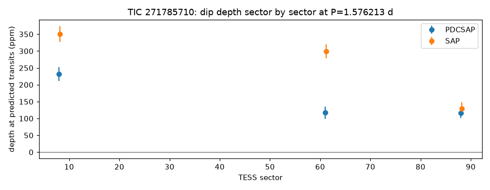

TRANSMISSION #017 ·
Deep dive on TIC 271785710: an orbit that would sit inside a red giant
Follow-up on TIC 271785710, from the fourth sector 88 draw.
The batch search found a 152 ppm dip every 1.576 days, about 4 hours long, 42 transits, signal-to-noise 16. TESS only has three sectors on this star (2019, 2023 and 2025), so the deep TLS search used the same data and found the same thing: 1.5762 days, 155 ppm, signal-to-noise 15.6. In the batch search the odd and even dips were close (136 vs 167 ppm) and there was nothing at the halfway point. Its detection score is 10.0, barely above the forest of other peaks.
The star is the problem. It's a red giant about 7.5 times the Sun's size and roughly 5,000 K. A 1.58-day orbit around a star like this would have a radius of about 5 solar radii, which puts it inside the star. Anything big enough to make a 152 ppm dip on a giant this size would also be about 10 Earth radii across.
Gaia adds a twist: it lists this giant as a spectroscopic binary with a 142-day orbit. That companion is far too slow to cause the 1.6-day dips, but it's a reminder there's more light in this system than one star's.
The dips don't agree either. Measured sector by sector, the depth is 232, 117 and 116 ppm in the cleaned light curves and 350, 299 and 130 ppm in the raw ones. A planet blocks the same amount of light every time.

The most likely sources are the giant's own surface churning, which makes slow noise that can line up into fake dips, or a faint eclipsing binary nearby. A star 3.4 magnitudes fainter, 66 arcseconds away, would need to dim by only 0.35%. Marked probably false positive.
Every signal, explained (1)
Tap a row to open it. Sorted by signal strength.
TIC 271785710#1Passed the robots, failed the eyeball 1.576 d · 155 ppm · SNR 15.6 · ~10.1 R⊕
This one got through every automatic check, which is rare. Then Kepler looked at it by eye and followed it up, and it didn't hold up.
- Impossible orbit. Anything circling every 1.58 days would sit about 7.2 solar radii out, which is inside a 7.5-solar-radius star. The dip probably comes from a smaller star blended into the same pixels, or the catalogue size is off.
Kepler’s eyeball check: SDE 9.6 peak barely above forest, broad shallow 4 h fold; host is a 7.45 Rsun giant (logg 2.6, ~0.8 Msun) so a 1.576 d orbit (a~5.3 Rsun) would lie inside the star; Gaia DR3 SB1 orbit P=142.4 d K=13.1 km/s RUWE 1.53; deep TLS (results/deep_TIC271785710, same 3 sectors) recovered 1.5762 d SNR 15.6 SDE 10.0; per-sector depth 232/117/116 ppm PDCSAP, 350/299/130 SAP (inconsistent); G=13.04 star at 65.6 arcsec needs 0.35%; actual folder results/deep_TIC271785710 (batch_folder=results/deep so the Kepler Log matches deep runs)

Candidates table
| TIC | # | Status | Vet | P (d) | Depth (ppm) | Dur (h) | SNR | SDE | N | R⊕ | Flags |
|---|---|---|---|---|---|---|---|---|---|---|---|
| 271785710 | 1 | NEW_CANDIDATE | PASS | 1.5762 | 155 | 3.70 | 15.6 | 10.0 | 42 | 10.1 | - |
Diagnostic plots
Full pipeline report
Planet-hunter report
Generated 2026-11-02 13:12 UTC by hunt.py v1.0.0.
Stars processed
1 stars total: 1 done
Signals found: 1 (1 new and passing vetting, 0 new but failing vetting, 0 matching known planets/TOIs/CTOIs).
New candidates that passed the automatic checks
These are the ones to look at first. Passing the automatic checks does not make something a planet. Open each plot and follow the eyeball checklist in BOT_BRIEF.md before telling anyone about it.
| TIC | # | P (d) | depth (ppm) | dur (h) | SNR | SDE | N tr | Rp est (Re) | flags | note | plot |
|---|---|---|---|---|---|---|---|---|---|---|---|
| 271785710 | 1 | 1.57621 | 155 | 3.70 | 15.6 | 10.0 | 42 | 10.12 | - | no catalogued planet/TOI on this star | png |
New signals that failed vetting
Usually eclipsing binaries, stellar variability or instrument noise. Worth a glance, rarely more.
none
Signals matching something already catalogued
A good sanity check: if the pipeline recovers known planets, it is working.
none
Stars with errors
none
Caveat
A NEW_CANDIDATE here is only a candidate. Most automatic detections in TESS data turn out to be eclipsing binaries (often a nearby star blended into the same pixels), stellar activity or systematics. Confirming a planet needs pixel-level checks, follow-up photometry, and usually spectroscopy. Promising, carefully checked signals can be shared on ExoFOP (as a CTOI) or with Planet Hunters TESS.